Diagramme de Séquence :
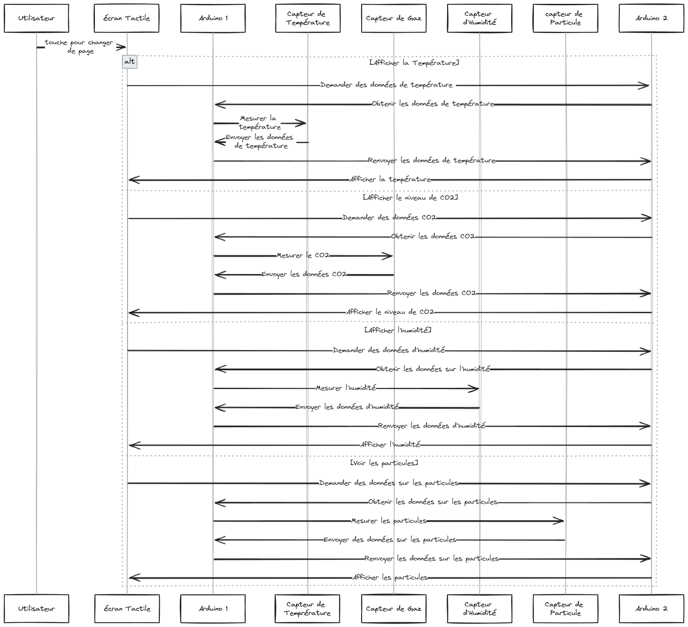STI2D
Sciences et Technologies de l'Industrie et du Développement Durable
La filière STI2D s'adresse aux lycéens qui s'intéressent à l'innovation technologique. Elle prépare les étudiants à poursuivre des études supérieures, notamment dans les secteurs industriels, scientifiques ou technologiques.
La STI2D vise à :
- Acquérir des connaissances solides dans les sciences et les technologies industrielles.
- Développer des compétences dans la conception, la réalisation et l'analyse de projets techniques.
- Sensibiliser aux enjeux du développement durable, de l'innovation et de la gestion des ressources.
- Préparer les élèves à intégrer des formations supérieures telles que BTS, DUT (BUT), écoles d'ingénieurs.
Ma spécialité :
J'étais en spécialité SIN (Système d'Information et Numérique).
Nous avons exploré les systèmes électroniques, les réseaux informatiques,
nous nous sommes également penchés sur la programmation et enfin le traitement des données numériques.
En résumé, nous avons appris la numération (binaire, octale, hexadécimale, etc.), le C# et le Python. Nous avons étudié l'électronique (transistors, capteurs, etc.), l'organisation de projets avec différents logiciels, la modélisation 3D, la simulation de circuits. Nous avons aussi abordé tout ce qui concerne les réseaux, les signaux électriques, les filtres, ainsi que la conception d'objets et des projets de grande envergure.
En STI2D, nous avons appris à maîtriser les outils et les processus industriels, en réalisant des projets concrets en groupe, intégrant nos connaissances techniques.
Projet
En terminale, j'avais pour projet de créer un "pollumètre", un dispositif permettant de mesurer la pollution et d'afficher les résultats sur un appareil. Le but était d'éviter un taux de pollution trop élevé en reliant ce dispositif à une VMC ou un système automatisé pour ouvrir une fenêtre.
Pour ce projet, nous avons travaillé en autonomie en passant par toutes les étapes suivantes :
- Idées et planification (brainstorming)
- Conception sur logiciel
- Câblages et simulations sur logiciel
- Câblages et tests réels
Idées et Planification
Diagramme de définition de blocs :
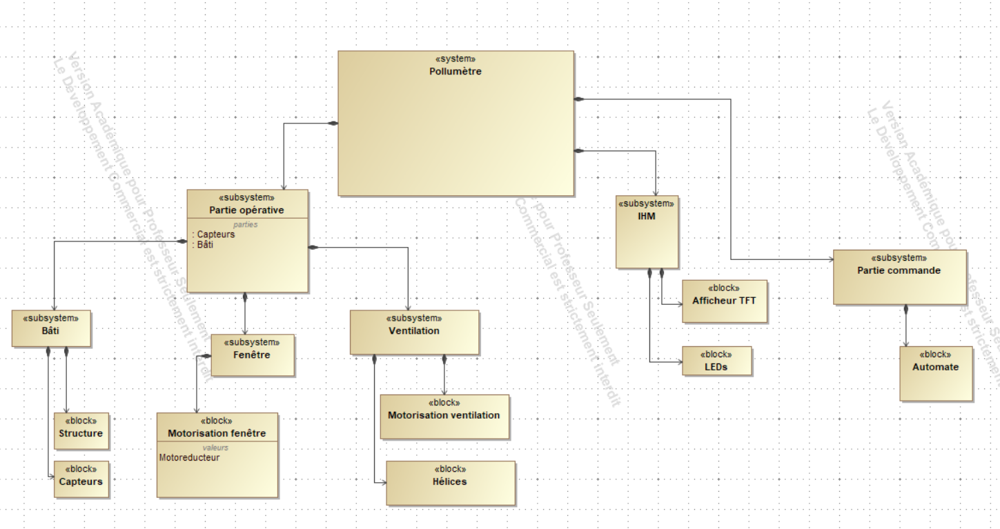Diagramme de cas d'utilisation :
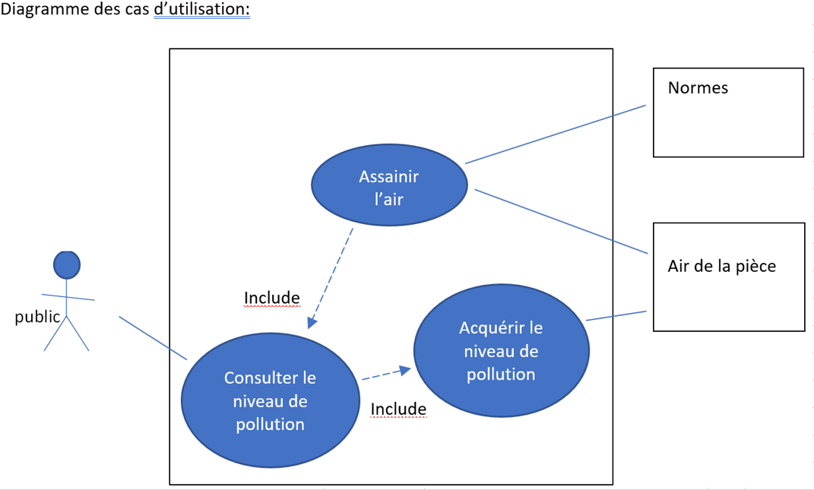Diagramme d'exigence :
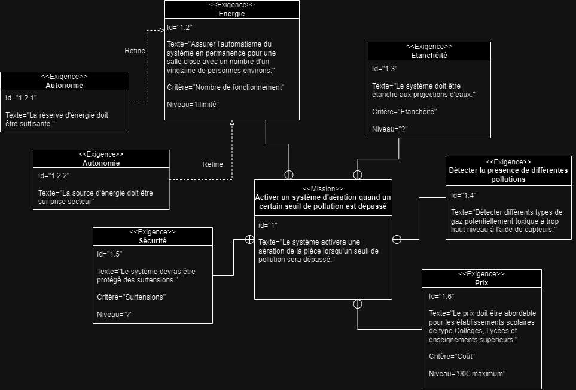Conceptions sur logiciel
Plan 3D :
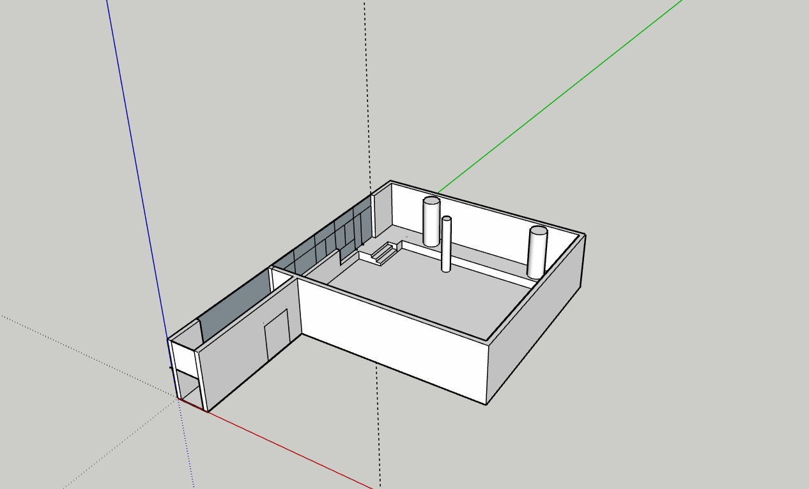Modèle boitier :
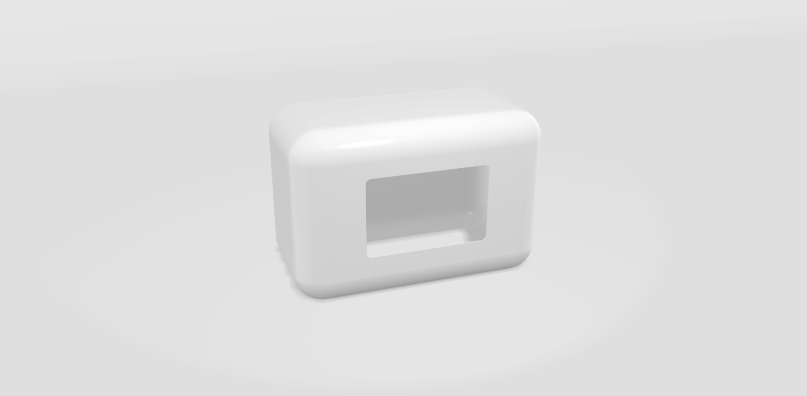Cablages et simulations sur logiciel
Premier capteur C02 :
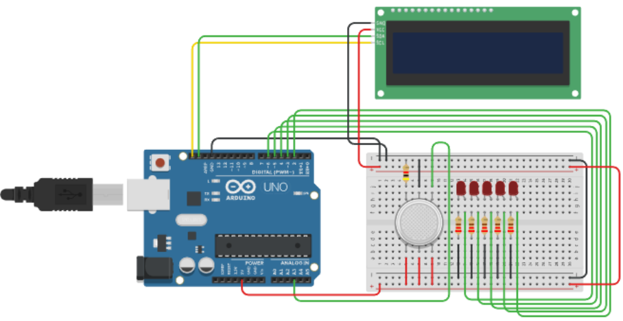Deuxième capteur C02 :
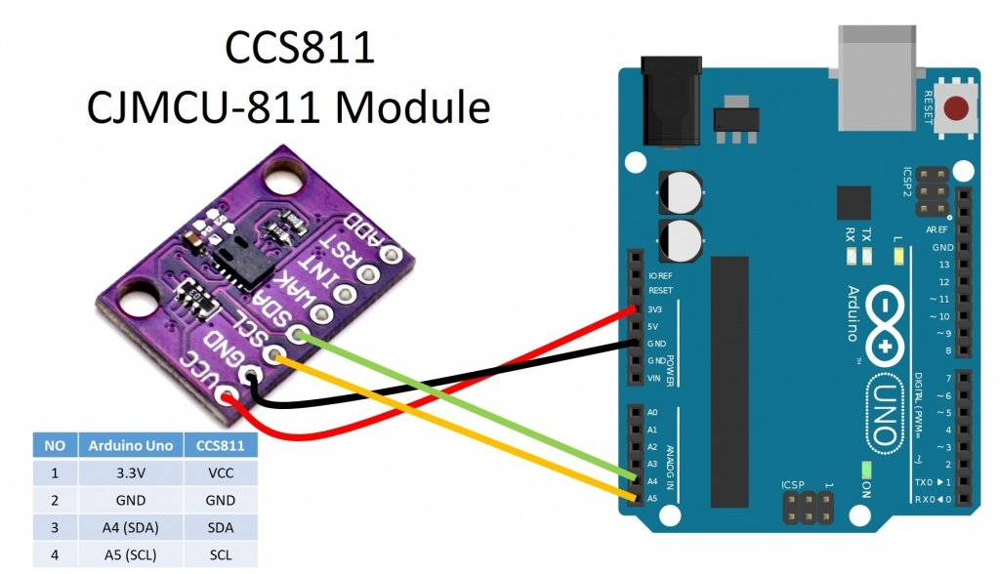Capteur particule :
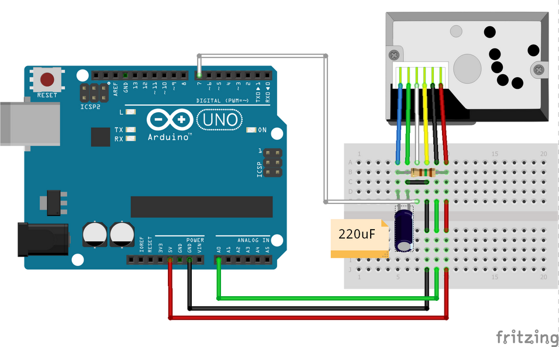Capteur humidité :
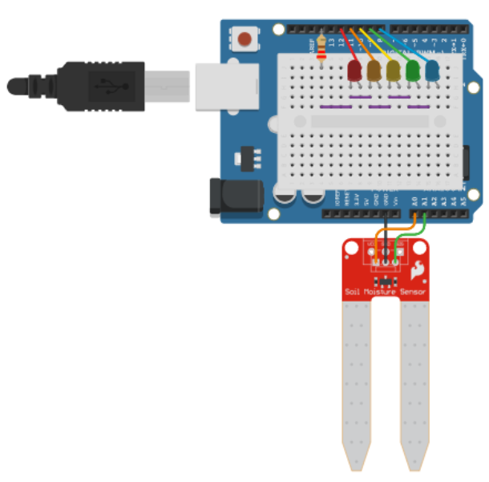Capteur temperature :
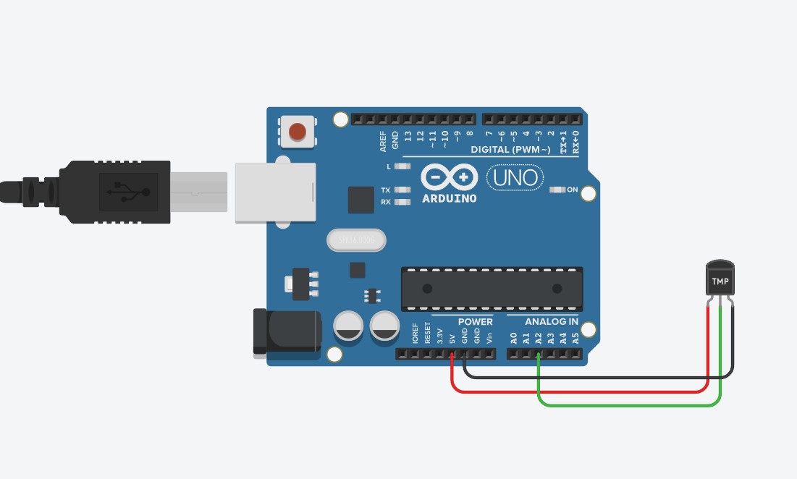IHM (Interface Homme Machine) :
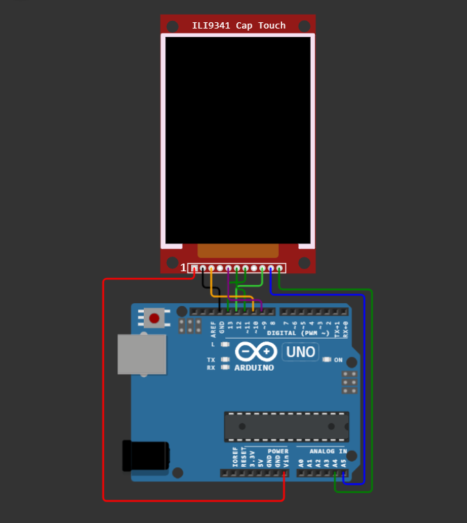Cablages et tests en réel
Capteur CO2 :
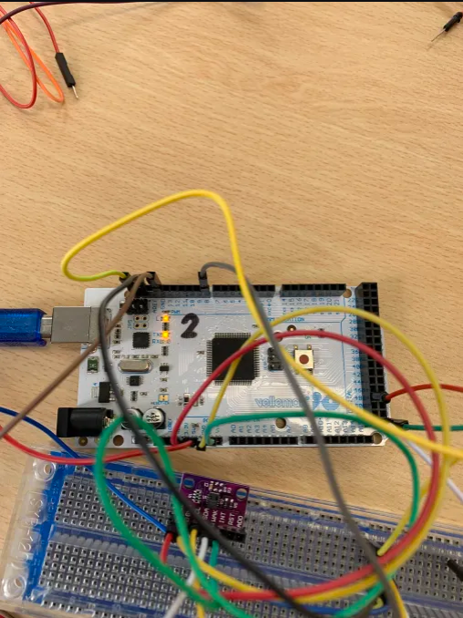capteur CO2 avec écran LCD :
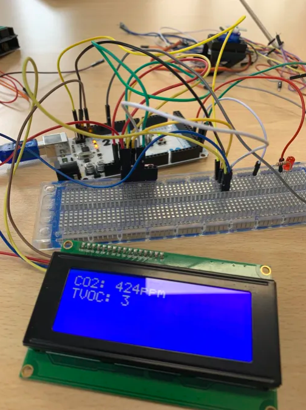École 42
L'École 42 est une école d'informatique qui vise à former des développeurs et des professionnels de l'informatique capables de relever les défis du monde numérique. Elle met un point d'honneur à favoriser l'auto-apprentissage, la collaboration et la créativité pour préparer ses étudiants à des métiers variés : développement logiciel, cybersécurité, data science, intelligence artificielle, etc.
Les objectifs de 42
- Former des talents sans discrimination de diplôme, d'âge ou d'expérience.
- Encourager l'autonomie et l'innovation grâce à une pédagogie sans cours ni professeurs.
- Répondre aux besoins croissants des entreprises dans le domaine technologique.
Classement
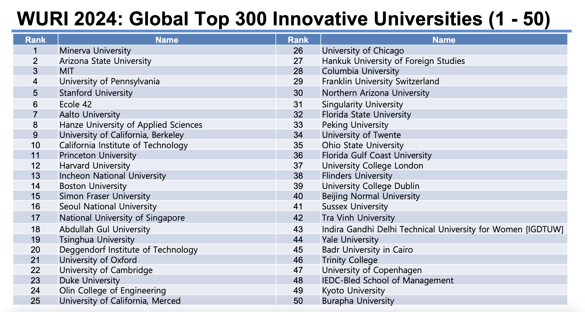L'École 42 est classé 6e meilleur école la plus innovatrice du monde, elle est même devant l'université d'Harvard.
Le cursus
Je n'ai que participé à la piscine de 42 pendant un mois, ce mois m'a appris beaucoup de chose.
Pendant ce mois, on travail de manière intensive, où l'on apprend la base du langage C.
La méthode de travaille est la suivante :
- Pas de professeurs ni de cours traditionnnels : L'apprentissage se fait par projets concrets
- Méthode peer-to-peer (P2P) : Les étudiants travaillent en collaboration et évaluent leurs travaux entre-eux
- Gamification : Les étudiants progressent dans leur formation comme dans un jeu vidéo, en passant des niveaux (projets) de difficulté croissante. 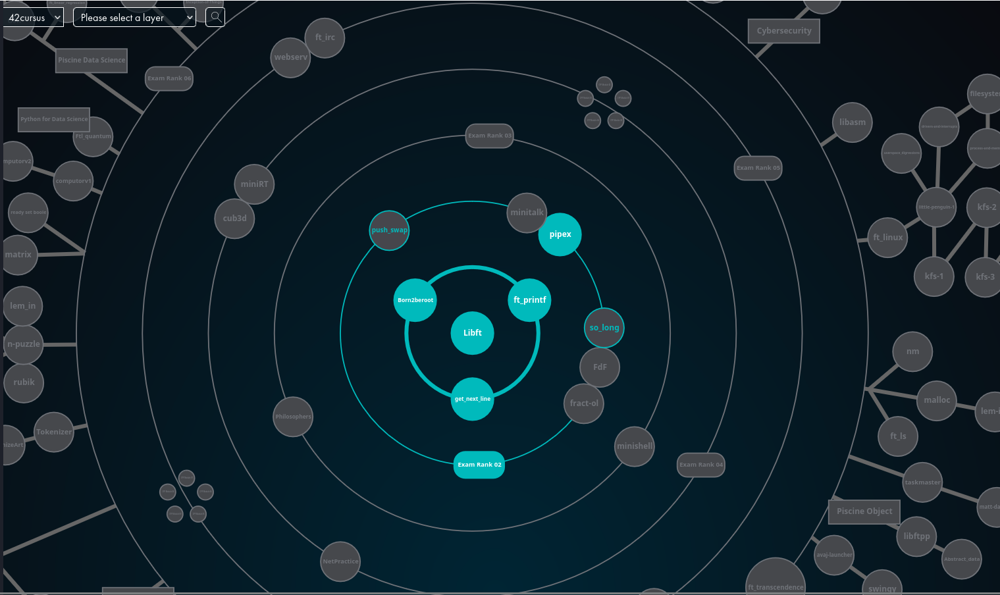
- Durée flexible : Le cursus peut durer entre 3 et 5 ans, selon le rythme de l'étudiant.
- Focus sur les compétences pratiques : Tout est orienté vers le développement d'aptitudes directement applicables au monde professionnel.
-
Horaires de travail flexible:
On peut venir à 42 pour travailler à l'heure que l'on souhaite, l'école est ouverte 24h/24 même la nuit.
/!\ Mais attention à bien rendre les projets à temps.